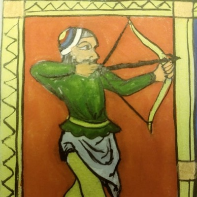
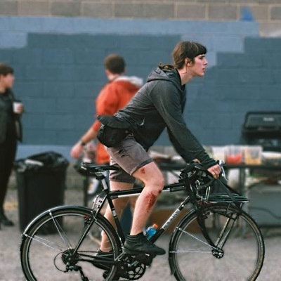

Jacob Finkelman
Jacob Finkelman is the AI Security Engineer in Residence at the Rust Foundation. He has been a member of the Rust Cargo Team since 2018 and became its Co Lead in 2026.
Ecosystem
Stewarded by Rust Foundation

Jacob Finkelman is the AI Security Engineer in Residence at the Rust Foundation. He has been a member of the Rust Cargo Team since 2018 and became its Co Lead in 2026.
Security Lead
Walter leads security at the Rust Foundation, responsible for security for the Rust Project and Rust Ecosystem; he is also a member of the Rust Projects Security Response Working Group. He comes from a 20 year career in security, with a background ranging from security consulting, C/C++ code review, offensive red teaming, game industry security and control systems penetration testing.

Engineer in Residence
Jess Izen is an Engineer in Residence for the Rust Foundation, seconded full-time by Amazon Web Services (AWS). She focuses on supply chain hardening and other engineering work involving infrastructure and community libraries beyond the Rust compiler and standard library. She wears many additional hats, as a member in the Rust Project and maintainer of various Rust crates in the networking and observability domains.
Read how the Rust SEIRs are working with the community.
Featured story
The Rust Foundation, funded by Alpha-Omega, is hiring a full-time AI Security Engineer in Residence to review Rust and widely used crates for real vulnerabilities and filter out low-quality AI-generated reports.
By Joel Marcey, Rust Foundation